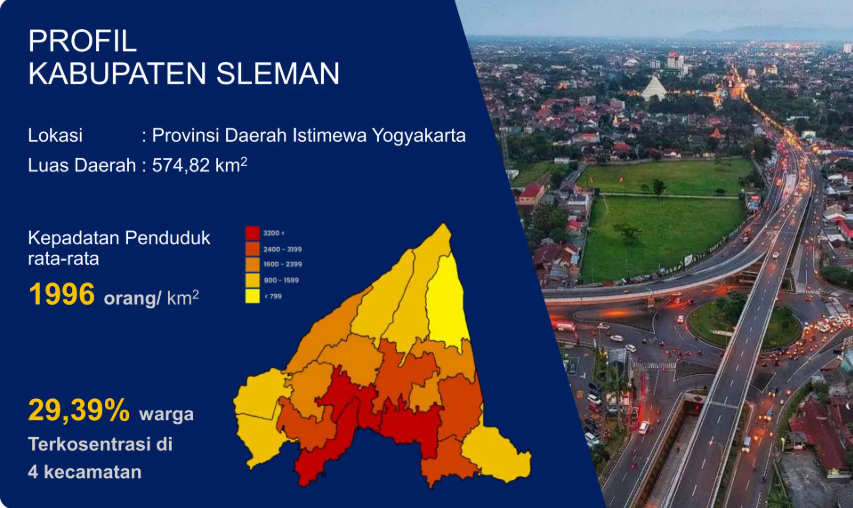
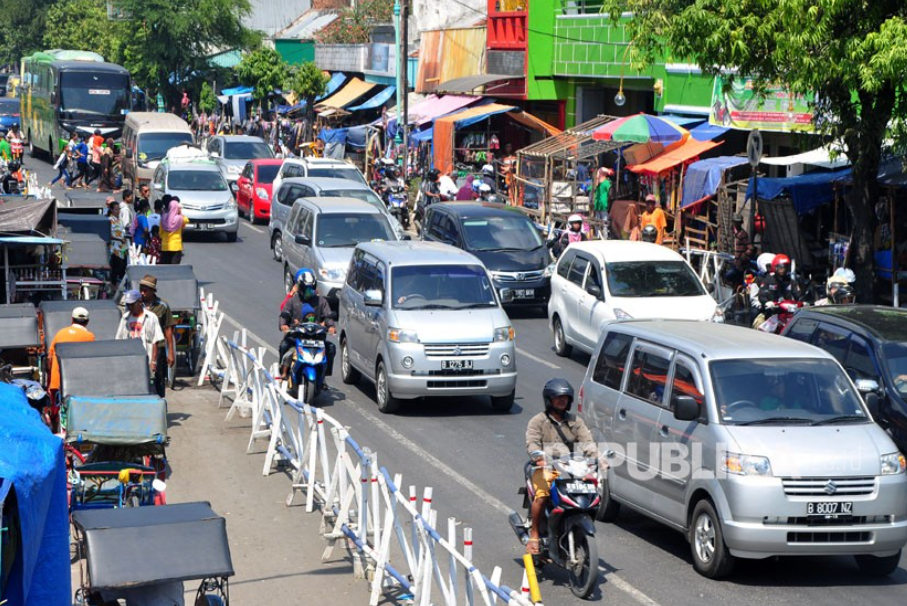
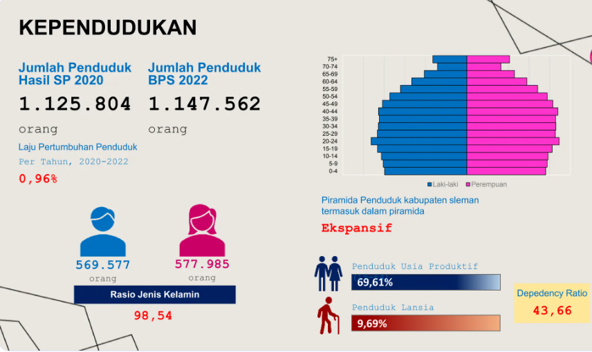

Website ini merupakan platform WebGIS kependudukan Kabupaten Sleman yang dirancang untuk menyajikan informasi spasial secara interaktif, informatif, dan mudah dipahami oleh berbagai kalangan pengguna. Melalui pemanfaatan teknologi sistem informasi geografis, website ini menampilkan data kepadatan penduduk dalam bentuk peta digital yang memungkinkan pengguna untuk mengeksplorasi persebaran penduduk secara visual berdasarkan wilayah administrasi yang ada. Informasi yang disajikan telah diolah dan diklasifikasikan ke dalam beberapa kategori tingkat kepadatan, yaitu rendah, sedang, dan tinggi, sehingga pengguna dapat dengan mudah mengidentifikasi pola distribusi penduduk di Kabupaten Sleman. Fitur interaktif pada peta memungkinkan pengguna untuk melihat detail informasi pada setiap wilayah sehingga dapat memberikan gambaran yang lebih komprehensif mengenai kondisi kependudukan.
663,8 - 1442,15
1442,15 - 2652,41
2652,41 - 3699,49


